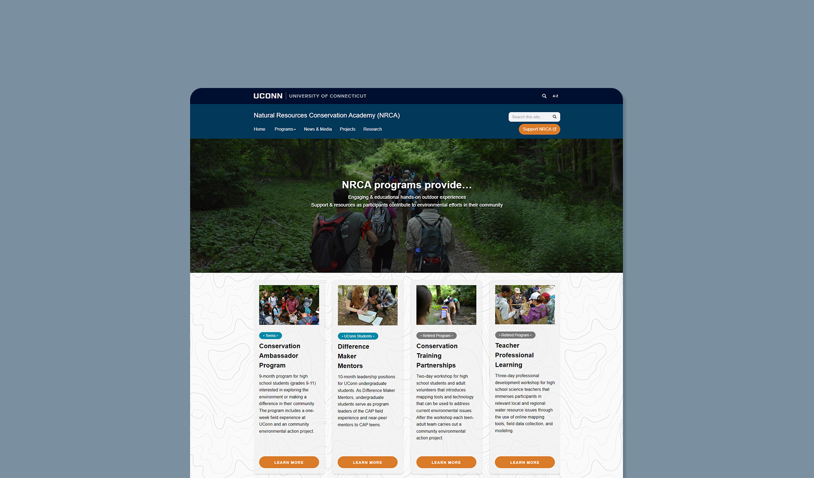
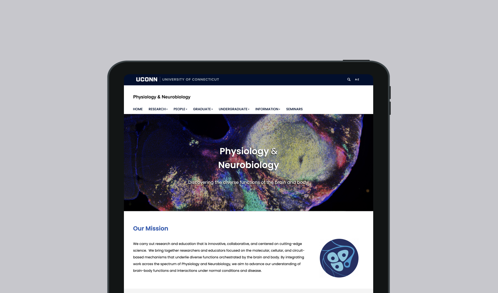
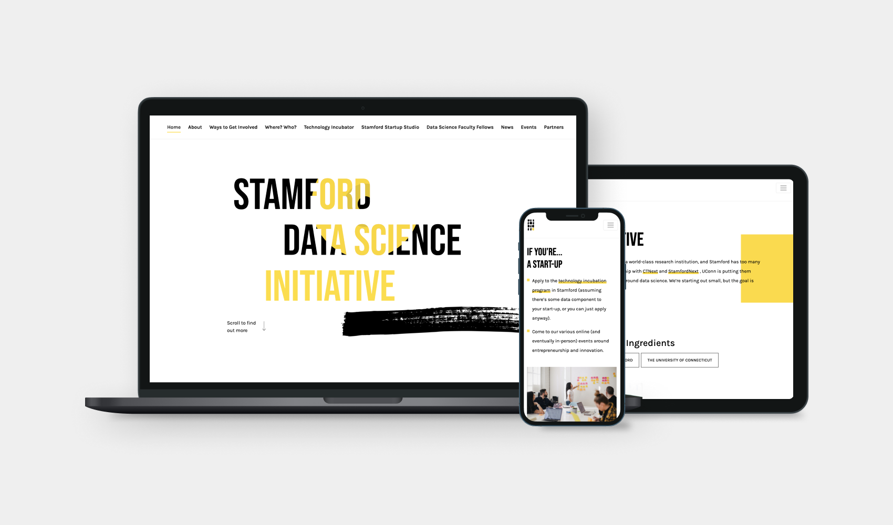

web development, ux design
All Projects

webapp design & development, rapid prototyping
NSF Grant Map
Financial Game
In Progress
Launching soon!

UI/UX design & app development
Financial Game
TurfGrass App
In Progress
Launching soon!

UI/UX design & app development
TurfGrass App

website redesign & development
UConn NRCA
UConn Center for Excellence in Developmental Disabilities Education, Research and Service
UCEDD has assisted in the advancement of early intervention, health care, community-based services, inclusive and meaningful education, child care, transition from school to work, employment, recreation and quality assurance, housing, assistive technology, transportation, and/or family support. The DX Group redesigned and developed this website with special care in ensuring it is accessible and inclusive to all.
Access2Ag
Access2Ag is an initiative of Connecticut Resource Conservation and Development (CT RC&D) in which they plan to use their close working relationships with agriculture producers and partner organizations to address the critical need of bringing nutrient-rich and healthy foods to at-risk members of the Eastern Connecticut community.
This is a collaboration with Connecticut Resource Conservation and Development (CT RC&D), Digital Experience (DX) Group, and the Center for Open Research Resources and Equipment (COR²E).

web/mobile application
Access2Ag

website
Voice Switch/Brain Switch

website redesign
UConn Physiology and Neurobiology
UConn Stamford Data Science Initiative

website
UConn Stamford Data Science Initiative
Rain Garden
During Fall ’20, we were approached by new friend David Dickson of the CT NEMO Program. CT NEMO maintains Rain Garden App, a FREE PWA (Progressive Web App). Through video tutorials, diagrams, text, and tools, the App guides users through how to properly locate, size, install, plant, and maintain a rain garden to help protect local waterways.

web/mobile application
Rain Garden
WellScan
What if food banks could better know the quality of their inventory? In collaboration with UConn's Rudd Center on Food Policy and Obesity, and with support from Partnership For Healthier America, Feeding America, and others, the DX Lab has developed a suite of web/mobile applications product for use by food banks, food pantries, and other organizations for ranking the nutritional quality of their inventory.
This application is housed, licensed and serviced at the University of Connecticut, and includes the WellScan Global nutrition database, WellScan Connect API, WelScan Mini scanning app.

web/mobile application
WellScan
Covid Surveillance Testing
Along with the Institute for Systems Genomics, the DX Group received an award from UConn's COVID-19 Rapid Seed Funding (COVID-RSF) Program for creation of a website and dynamic dashboard to showcase the University's response to COVID-19 titled "An Integrated Surveillance Program for Improved Detection, Containment and Mitigation of COVID-19."

website
Covid Surveillance Testing

website redesign
DMCT
Sourcery
Sourcery emerged from the design process of Greenhouse Studios and from the project team’s past work and ongoing interests in research software for the humanities.
Working with Greenhouse Studios, we developed an application that gives researchers access to documents that can’t be found online by paying other researchers to find them.

web/mobile application
Sourcery
CMOT
What if classroom evaluators had a tablet app for their in-class assessment? We built CMOT (Classroom Management Observation Tool) under the direction of Dr. Jen Freeman of the UConn Neag School of Education and her associated UConn REP (Research Excellence Program) grant. It allows observers to enter progress monitoring items, which have been validated for informing decisions about relative strengths/needs with positive and proactive classroom management. It also contains a checklist of empirically-supported practice features to periodically “look for”.

progressive web application
CMOT
Contact Us
dx@uconn.edu